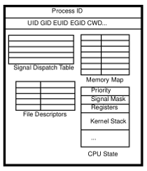

Jan 12th, 2017
Introduction#
PHP and threads. Just this 3-word sentence, and we could write a book. As usual, we won't, but give informations and details to some degree about the subject
Let's start by some confusion many people fall in when it comes to such a subject. PHP is not a threaded language. PHP doesn't use threads itself into its heart, and PHP does not natively allow userland code to use threads as parallel mechanism, in any way.
So PHP is very far from other technologies, such as Java (for exemple). In Java, both the language itself is heavily threaded, and it also allows its users to make use of threads into their own programs. Not PHP. And this is for some reasons.
PHP's heart is not threaded, mainly for simplicity. When you'll read next chapter, you'll learn that threads is not "a magical technology that allows any program to run faster". Seems like a sales speech isn't it ? We are not sales, but technical , and so we know what we talk about. So PHP's engine does not use threads at the moment. It could in the future, but using threads introduce many many new difficulties in programming, for a result that could not be what you expect. The main difficulty is cross platform thread programming. The second one is shared resources and lock management, and the third one is that not every program can be turned to thread programming. PHP's design was born mainly around year 2000, at this time, thread programming was not that spreaded and mature, and engineers behind PHP (mainly Zend) decided to create a full monolithic engine with no threads (also they did not have the resource to ship a stable crossplatform threaded engine).
Second point is that PHP userland code can't use threads, because it is not how PHP expects your code to run. PHP is a fire-and-forget language, you should treat your request as fast as possible, and release PHP so that it can treat the next-to-come request. PHP has been designed as a glue language : you don't compute complex tasks that could require the usage of threads, but instead you access fast-and-ready resources, glue all together, and send that back to the user. With PHP you do things, and whatever could take "more time than usual" should not be done in PHP. That's why we use "Queue based" system to async some heavy tasks in PHP (Gearman, AMQP, ActiveMQ etc...). Unix way of seeing things : "develop small self-contained tools and link them together". So PHP is not designed to allow massive parallelism but other specialized technologies are - use the right tool for the right problem.
Some quick words on Threads#
Let's quickly remind souls about threads. Remember that we won't detail many things, and that you may find in books or on the Web everything you ever wanted to know about threads, in deep.
Threads are light unit of work treatment that reside into processes. Note the ownership : a process can spawn threads, and a thread must be part of one process (and just one). Process is the base unit of work under an Operating System (OS). Processes are heavy units of work treatment. On multi-CPU machines (nowadays' machines), several CPUs will run in parallel and will compute some load o behalf of running tasks. If two processes A and B are ready to be scheduled, and two CPUs (or two CPU cores) are ready to take some load, then A and B should get scheduled in the same time. The machine will then effectively compute several things in one solo unique unit of time (time frame), we call that "parallelism".
A process :

A thread :
All together :
A and B previously were processes : full independant workloads. Threads are not processes. Threads are unit of executions that live into a process. That is, a process can decide to cut its job into several more little tasks, that could run concurrently. For example, process A and B could each spawn threads, A1, A2 and B1, B2. If the machine hosts several CPUs (8 CPUs for example), then A1, A2, B1 and B2 could be run in the same timeframe.
Using threads, a programmer can decide to cut his process job into several more little tasks, that could run concurrently.
Threads, are a way to cut a process job into several small jobs, that could be run in parallel (in the same timeframe). Threads are run barely the same way processes are : they own a state that the Kernel thread scheduler will use to manage them.

Threads are lighter than processes, they only need a stack and some registers, whereas a process needs many more things (a new VM frame from the kernel, a heap, some signal informations, some file descriptor informations, some locks informations etc...).
Processes memory is hardware managed by the Kernel and the MMU, whereas thread memory is software managed by the programmer and the threading library used.
What you can memorize is that threads are lighter than processes and more easily manageable. If well used, they'll run faster than processes, as the OS Kernel is very less involved in thread management and scheduling that it would be with processes.
Threads memory layout#
As we've seen, threads have their own stack, that is when they access variables declared into a function, they own their own copy of such data.
But we can't say the same about the process heap : that latter is shared accross threads, so are global variables and file descriptors. This is an advantage, or a drawback. If you only read from global memory, you need to read at the right moment (after thread X and before thread Y for example). If you happen to write to it, you then need to make sure several threads don't try to write to the same memory area at the same time : they would corrupt that area and leave the memory in an unpredictable state; what we call a race condition. This is the main challenge behind thread programming.
For those concurrent access to happen, you need to incorporate into your code some programming technics such as reentrancy or synchronization routines. Reentrancy prevents concurrency, whereas synchronization masters concurrency in a predictable way.
Processes don't share any memory between them, the OS perfectly isolate them. Threads, however, share a big amount of the same process memory.
Having a big part of the memory shared, there is a need to synchronize common memory access, technical tools are used such as semaphores or mutexes (the most common ones). Those are based on a "lock" concept, that is if the resource is locked and a thread tries to access it, it will (by default) block, waiting for the shared resource to be available. And this is why using threads doesn't automatically mean your program will run faster. If you don't divide the tasks efficiently, and if you don't manage the shared memory locking efficiently, you'll end up having a program that takes more time to run than it would in one solo process with no threads : just because your threads keep waiting for each other (and I don't talk about dead locks, starvation, etc...).
Thread programming is trully complex if you are not used to it. You'll need many many hours of practice, and tons of WTF moments to gain experience to work with threads. Should you forget one little detail and your whole program will blow up at your face. Debugging threads is harder than debugging a thread-free program, as we are talking about real use cases of hundreds or thousands of threads running into a process. You get lost into your mind, and you quickly sink deep in the pool.
Thread programming is hard. Good thread programming, and good program parallel computing is really a challenge that takes many time to master.
As sharing memory that way is not always what we want, Thread Local Storage (TLS) appeared. TLS is mainly a concept of "globals owned by one thread and not shareable to others", those are memory areas that represent global state, but private to each thread (like in a process-only way). To implement TLS, on thread creation, one must allocate some process heap memory, ask the thread library for a key and associate that key to that storage. Every further access will use the key to unlock the thread-specific storage. A destructor is needed at the end of thread life to destroy allocated resources (traditional heap usage here).
An application is said "thread safe", when it fully masters every global resource access in a 100% predictable way. If not : you get bitten by the scheduler : random things start to happen and the game is over.
Thread libraries#
As you may have guessed, threads require some OS Kernel help. Threads have appeared in OS back in mid nineties, so that's quite a long time ago : they are mature and managed by OS Kernels since a long time.
But there still exists some crossplatform issues. Especially Windows against Unix worlds. Both have adopted different threading models, and different thread libraries.
Programming with threads and supporting crossplatform is still a challenge as of nowadays.
Under Linux, to create both a thread or a process, the Kernel system call is clone(). But that system call is extremely complex, thus as usual some C code have emerged around the syscalls to ease day to day programming using threads. Thread operations are not yet managed by the libc (C11 standard has started such a move), but by external libraries. Nowadays, under Unix flavors, pthread is used (though other libraries exist). Pthread stands for "Posix threads", which is a POSIX normalization of thread usage and behavior dating back from 1995. Hence, if you want to use threads in your program, you'll need to link it with libpthread, aka pass the -lpthread switch to GCC. Also, libpthread is a library. It is written in C, open source, and have its own version control and management.
So nowadays we mainly use the pthread library to program threads under Unix flavors. Not going into details again, pthread allows concurrency but parallelism is dependant on the OS and the machine.
Concurrency is multiple threads running on the same CPU out of order. Parallelism is multiple threads running at the same time on different CPUs.
Here is some concurrency :
Here is some parallelism :
PHP and Threads#
What happens to PHP in there ?. Let's start by reminders :
- PHP is not a threaded language : its engine and its code don't manage threads to parallelize its own internal work.
- PHP doesn't offer threads to users : You can't use threads with the PHP language natively. Joe Watkins, PHP Core developper, created a nice library that adds threads to userland : ext/pthread. It is a nice project, but I personnaly wouldn't use PHP for such tasks : it's not the right language for that, I'll go with C or Java for example.
So, what about threads and PHP, what's the point ?
How PHP treats requests#
It is all about how PHP will handle HTTP requests. To serve several clients at the same time, a webserver needs some concurrency (or some parallelism). You can't pause everyone as you are answering to just one client right ?
Thus, what servers usually do is they use multiple processes, or multiple threads , to answer clients.
Historically, under Unix, the process model is used. Simply because processes is the basic of Unix, once Unix was born, processes was born with the ability to create new ones (fork()), destroy them (exit()) and synchronize them (wait(), waitpid()). In such environnements, multiple PHP will serve multiple requests for clients, but each one will be in its own process.
If you remember the introduction chapters, in such a case, there is nothing to do into PHP code : processes are fully isolated between them, and process A treating request A about client data A will not be able to communicate (read or write) with process B treating request B about client B. And this is what we want.
Such models include php-fpm, and Apache with mpm_prefork. Usually in 98% of cases you use one of theses two architectures.
Things get more complicated under Windows, or under Unixes where your server uses threads.
Windows is a great operating system (true). It has just one drawback : its source code is closed. But many technical resources about its internal engine can be found on the Web or into books. Microsoft engineers share many knowledge about how Windows works into its heart.
Microsoft Windows has taken a different path from Unixes when it comes to concurrency or parallelism. Windows heavily relies on threads. In fact, creating a process in Windows is such an overkill heavy task that you usually don't do it. Under Windows you use threads, everywhere, everytime. Windows threads are order of magnitude more powerful that Linux ones ; yes they are.
So when you run PHP under Windows, the webserver (whatever it is, IIS , Apache, FooBarBaz) will treat different clients into threads, and not into processes. That means that in such an environment, PHP will run into a thread ; and in that case; PHP must be extra carefull about thread specifications : it must be thread safe.
PHP must be thread safe, that is it must master the concurrency it hasn't itself created, but leaves in/with. As you may have guessed, that means PHP will have to find a way to protect its access to its own global variables ; and there are many of them into PHP's heart.
The layer that is responsible of such a protection is called Zend Thread Safety, aka ZTS.
Please, note that the same is true under Unix if you happen to use threads as the way of parallelize client request treatments, but that is a very uncommon situation as under Unix we are usually used to using classical processes for such a task, though using thread is still possible and may be an advantage in term of performances. Traditionaly a system can run many more threads that it could with processes : threads are lighter. Also, if you happen to use a PHP extension that requires thread safety to be activated - such as ext/pthread - you will need a thread safe PHP.
Zend Thread Safety internal details#
Ok here we go. ZTS is activated using the --enable-maintainer-zts switch. As said before, you usually don't need this switch, until you run PHP under Windows, or you run PHP with an extension that needs the engine to be thread safe (like ext/pthread for example).
To check against ZTS, you have several ways to achieve that. Use CLI and php -v, which tells you NTS (Not Thread Safe) or ZTS (Zend Thread Safe).
You can also ask phpinfo() :

In your code, you can read the PHP_ZTS constant value from PHP.
if (PHP_ZTS) {
echo "You are running a thread safe version of the PHP engine";
}All PHP's heart is thread safe when compiled with ZTS. What could not be thread safe are extensions you activated. Official PHP extensions (distributed with PHP) are all thread safe, but for other third-party ones, who knows ? You will see in a few moment that mastering thread safety from PHP extensions needs some special programming API usage, and as always with threads : one miss and you risk to have your whole server blow at your face.
Remember that with threads, if you dont call reentrant functions (many from libc) or if you access a true global variable blindly, you are going to generate some weird behaviors in all the sibling threads. Translated to the PHP use-case : if you mess-up with threads in one of your extension, you are going to impact every client occupied in every other thread of the webserver! This is absolutely dramatic situation, as one client could corrupt every other clients data.
When designing PHP extensions, ultra care and very good knowledge of thread programming are necessary. If not, when running in a thread environment, you're gonna break the whole webserver in a very nasty random way that you won't be able to debug in reasonnable time.
When designing PHP extensions, if you mess-up with threads, you are going to impact every client occupied in every other thread of the webserver. You could even not notice that, as bad thread programming usually leads to horrible random behaviors you can't reproduce easilly.
Use and design reentrant functions#
When designing a PHP extension, use reentrant functions. Reentrant functions are functions that don't rely on any global state to work. This is simplified, the true definition is that reentrant functions are functions that can be called as they've not finished to be called yet. Think about functions that can be run in parallel in two or more threads. It then becomes obvious that if such functions use global state, they are not reentrant (but they could lock their global state, and thus be thread-safe either ;-)).
Many libc traditional functions are not reentrant, because they've been designed in a time where threads simply did not exist yet. So some libc (especially glibc) publish reentrant equivalent functions as functions suffixed by _r(). Also, the new C11 standard gives a big room to threads, and C11 libcs benefit from a rewrite with an s suffix : _s() (localtime_s() for example).
Aka, strtok() => strtok_r(); strerror(), strerror_r(); readdir() => readdir_r(); or gethostbyname() => gethostbyname_r() etc...
PHP itself provides some of them mainly for crossplatforms purpose. Have a look at main/reentrancy.c.
Also, if you happen to write your own C functions, think about reentrancy. If you can pass your function everything it needs as arguments (on the stack or through registers so), and if that function doesn't use any global/static variables and any non-reentrant function; it is then reentrant.
Don't link against non-thread safe libraries#
Still obvious, remember that thread programming is about the whole process memory image being shared, and the whole process memory image includes any linked libraries.
If your extension links against a known-to-not-be-thread-safe library, then you will have to develop you own thread safety tricks to protect access to global state into such a library. Something really common in C and thread programing, but that is easy to miss.
ZTS usage and details#
ZTS is Zend Thread Safety. This is a layer of code that controls access to Thread global variables, using TLS as of PHP 7 (Thread Local Storage).
When we develop the PHP language, or as a PHP extension writer, we must differentiate between two kinds of globals in code.
We have true globals, those are plain traditionnal C global variables. As we have seen, such variables are not bad in design, but as we did not protect them against concurrency in threads, we are only allowed to read them when PHP is treating a request. The case is that those variables (we call them "true globals") are created and written to before any thread is created yet. That step is called the module init step in PHP internal vocabulary , and we can clearly see it in PHP extensions, as they are hooked about it :
static int val; /* true global */
PHP_MINIT(wow_ext) /* PHP Module initialization */
{
if (something()) {
val = 3; /* writing to a true global */
}
}The above pseudo-code details what every PHP extension could look like. Extensions owns several hooks that get triggered throught PHP's life, the so-called MINIT() hook is about PHP initialization. During such a step, PHP is starting, and one can then write or read to a global variable safely, like its done in the example.
Then come the second important hook, RINIT(), or request initialization. This step is called on every extension for every new request to deal with. That is, RINIT() may be called thousands of times in an extension.
At this step, PHP already leaves in a thread. The webserver will have threaded the initial process, so in RINIT(), you must be thread safe. As threads are created to handle several requests at the same time, this is perfectly logical. What one should keep in mind, is that you don't create the thread. PHP doesn't thread itself, never. This is the webserver that does it.
We use so called globals, or thread globals. Those are global variables, but that are thread protected by the ZTS layer. Like this :
PHP_RINIT(wow_ext) /* PHP Request initialization */
{
if (something()) {
WOW_G(val) = 3; /* writing to a thread global */
}
}To access thread globals, we used a macro, WOW_G() here. We will now detail what happens behind the scene of this macro.
The need of macros#
Remember. When PHP is threaded, all the request-related global state must be protected in access. But when PHP is not threaded, the protection is not needed anymore, as each process got its own part of memory : nothing is shared.
So, the way of accessing a request-related global will differ by the environment (multitask engine used). That means that we had to find a way so that accessing a request-bound global is done apparently the same way, whatever the environment.
We used macros for that, as they are just dedicated to such tasks.
The WOW_G() macro above will resolve very differently according to the multitask engine PHP is running on (process or threads).
And that is something you change by recompiling your extension, this is why PHP extensions are not compatible between ZTS mode and non-ZTS mode : this is not binary compatible !
Obviously ZTS is not binary compatible with NZTS. Extensions must be recompiled when switching from one mode to the other
See it : the WOW_G() macro usually resolves something like this in a process mode :
#ifdef ZTS
#define WOW_G(v) wow_globals.v
#endifAnd something like this in a threaded mode :
#ifdef ZTS
#define WOW_G(v) wow_globals.v
#else
#define WOW_G(v) (((wow_globals *) (*((void ***) tsrm_get_ls_cache()))[((wow_globals_id)-1)])->v)
#endifLooks more complex for ZTS mode isnt it ?
In process mode, that is in NZTS (Non Zend Thread Safe), a true global is used, here it is named wow_globals. This variable represents a structure containing the global variables, and you access every member into it with the macro. WOW_G(foo) leads to wow_globals.foo.
Obviously, you'll need to declare such a variable, and eventually to zero it at startup. This is done using a macro as well (as the way to do that will differ in ZTS mode). You do it like this :
ZEND_BEGIN_MODULE_GLOBALS(wow)
int foo;
ZEND_END_MODULE_GLOBALS(wow)
ZEND_DECLARE_MODULE_GLOBALS(wow)The macros then resolves to
#define ZEND_BEGIN_MODULE_GLOBALS(module_name) typedef struct _zend_##module_name##_globals {
#define ZEND_END_MODULE_GLOBALS(module_name) } zend_##module_name##_globals;
#define ZEND_DECLARE_MODULE_GLOBALS(module_name) zend_##module_name##_globals module_name##_globals;And that's it. Pretty easy in process mode.
In threaded mode, aka using ZTS, like you can spot, there is no C true global anymore but the globals declaration look the same. Look :
#define ZEND_BEGIN_MODULE_GLOBALS(module_name) typedef struct _zend_##module_name##_globals {
#define ZEND_END_MODULE_GLOBALS(module_name) } zend_##module_name##_globals;
#define WOW_G(v) (((wow_globals *) (*((void ***) tsrm_get_ls_cache()))[((wow_globals_id)-1)])->v)Declaring our globals is done the same way in ZTS or NZTS.
But accessing them looks a lot different. In ZTS, there is a call to the function tsrm_get_ls_cache(). This is the call to the Thread Local Storage (TLS), that is it will return a memory area that is bound to the current specific thread. Like you can see, this memory area seem complex, as the first cast we perform to it is a (void ***) cast, which let us smell that there is a lot of complexity behind it.
The TSRM layer#
ZTS is designed using what we call the TSRM layer. Thread Safe Resource Manager layer. This is just some plain C code, nothing more !
TSRM is a layer of code, that makes ZTS possible. It is mainly stuck into the /TSRM folder of PHP source code. Have a look at it, it is interesting even if we'll detail it here.
TSRM is not a perfect layer, it is globally well designed and ages back from PHP 5 beginning era (~2004). It is able to deal with several low-level threading libraries : Gnu Portable Thread, Posix Threads, State Threads, Win32 Threads or BeThreads. The layer you want it to use can be chosen at configuration time (./configure --with-tsrm-xxxxx).
We will only deal with the pthreads implementation when analysing TSRM in deep.
TSRM boot#
At PHP boot, that is at module initialization, PHP quickly calls for tsrm_startup(). As PHP doesn't know yet how many threads and resources to build a thread-safe protection for, it prepares thread tables with just one element into them. Those tables will later grow, they are then allocated using a traditionnal malloc().
This startup step is also important as it is here that we create both the TLS key, and the TLS mutex we'll need to synchronize.
static pthread_key_t tls_key;
TSRM_API int tsrm_startup(int expected_threads, int expected_resources, int debug_level, char *debug_filename)
{
pthread_key_create( &tls_key, 0 ); /* Create the key */
tsrm_error_file = stderr;
tsrm_error_set(debug_level, debug_filename);
tsrm_tls_table_size = expected_threads;
tsrm_tls_table = (tsrm_tls_entry **) calloc(tsrm_tls_table_size, sizeof(tsrm_tls_entry *));
if (!tsrm_tls_table) {
TSRM_ERROR((TSRM_ERROR_LEVEL_ERROR, "Unable to allocate TLS table"));
return 0;
}
id_count=0;
resource_types_table_size = expected_resources;
resource_types_table = (tsrm_resource_type *) calloc(resource_types_table_size, sizeof(tsrm_resource_type));
if (!resource_types_table) {
TSRM_ERROR((TSRM_ERROR_LEVEL_ERROR, "Unable to allocate resource types table"));
free(tsrm_tls_table);
tsrm_tls_table = NULL;
return 0;
}
tsmm_mutex = tsrm_mutex_alloc(); /* Allocate a mutex */
}
#define MUTEX_T pthread_mutex_t *
TSRM_API MUTEX_T tsrm_mutex_alloc(void)
{
MUTEX_T mutexp;
mutexp = (pthread_mutex_t *)malloc(sizeof(pthread_mutex_t));
pthread_mutex_init(mutexp,NULL);
return mutexp;
}TSRM Resources#
Now that TSRM layer is booted, it is time to add new resources to it. A TSRM resource, is a memory area that represents a set of global variables, usually dedicated to a PHP extension, and that must be own by the current thread or protected for access.
So, that memory area has a size, and would need some initialization (constructor) and deinitialization (destructor). Usually initialization is just about zeroing the area whereas deinit does nothing.
That memory area, which is called a TSRM resource, will be given a unique resource ID by the TSRM layer. The caller then should save such an ID, as it will need it later on to be given back the protected memory area from TSRM.
Here is the TSRM function that creates a new resource :
typedef struct {
size_t size;
ts_allocate_ctor ctor;
ts_allocate_dtor dtor;
int done;
} tsrm_resource_type;
TSRM_API ts_rsrc_id ts_allocate_id(ts_rsrc_id *rsrc_id, size_t size, ts_allocate_ctor ctor, ts_allocate_dtor dtor)
{
int i;
tsrm_mutex_lock(tsmm_mutex);
/* obtain a resource id */
*rsrc_id = id_count++;
/* store the new resource type in the resource sizes table */
if (resource_types_table_size < id_count) {
resource_types_table = (tsrm_resource_type *) realloc(resource_types_table, sizeof(tsrm_resource_type)*id_count);
if (!resource_types_table) {
tsrm_mutex_unlock(tsmm_mutex);
TSRM_ERROR((TSRM_ERROR_LEVEL_ERROR, "Unable to allocate storage for resource"));
*rsrc_id = 0;
return 0;
}
resource_types_table_size = id_count;
}
resource_types_table[(*rsrc_id)-1].size = size;
resource_types_table[(*rsrc_id)-1].ctor = ctor;
resource_types_table[(*rsrc_id)-1].dtor = dtor;
resource_types_table[(*rsrc_id)-1].done = 0;
/* enlarge the arrays for the already active threads */
for (i=0; i < tsrm_tls_table_size; i++) {
tsrm_tls_entry *p = tsrm_tls_table[i];
while (p) {
if (p->count < id_count) {
int j;
p->storage = (void *) realloc(p->storage, sizeof(void *)*id_count);
for (j=p->count; jstorage[j] = (void *) malloc(resource_types_table[j].size);
if (resource_types_table[j].ctor) {
resource_types_table[j].ctor(p->storage[j]);
}
}
p->count = id_count;
}
p = p->next;
}
}
tsrm_mutex_unlock(tsmm_mutex);
return *rsrc_id;
} As you can see, this function requires a mutex lock. If it is called into a child thread (it will be, for every of them), it will then lock other threads for the time it needs to manipulate the global thread storage state.
Our new resource is added to the dynamic resource_types_table[] array and is given a unique identifier, rsrc_id, which keeps incrementing as we add resources.
On request startup#
Now we are ready to treat requests. Remember that each request will be served into its own thread. So, what happens when a new request shows in ?
At the very beginning of every new request, the ts_resource_ex() function is called. This function reads the current thread id and tries to fetch the ressources allocated for this thread, aka the memory areas dedicated for globals for the current thread. If none found (new thread), then it will create the ressources for the current thread, based on the model it built at PHP Startup.
This is done using allocate_new_resource()
static void allocate_new_resource(tsrm_tls_entry **thread_resources_ptr, THREAD_T thread_id)
{
int i;
TSRM_ERROR((TSRM_ERROR_LEVEL_CORE, "Creating data structures for thread %x", thread_id));
(*thread_resources_ptr) = (tsrm_tls_entry *) malloc(sizeof(tsrm_tls_entry));
(*thread_resources_ptr)->storage = NULL;
if (id_count > 0) {
(*thread_resources_ptr)->storage = (void **) malloc(sizeof(void *)*id_count);
}
(*thread_resources_ptr)->count = id_count;
(*thread_resources_ptr)->thread_id = thread_id;
(*thread_resources_ptr)->next = NULL;
/* Set thread local storage to this new thread resources structure */
tsrm_tls_set(*thread_resources_ptr);
if (tsrm_new_thread_begin_handler) {
tsrm_new_thread_begin_handler(thread_id);
}
for (i=0; istorage[i] = NULL;
} else
{
(*thread_resources_ptr)->storage[i] = (void *) malloc(resource_types_table[i].size);
if (resource_types_table[i].ctor) {
resource_types_table[i].ctor((*thread_resources_ptr)->storage[i]);
}
}
}
if (tsrm_new_thread_end_handler) {
tsrm_new_thread_end_handler(thread_id);
}
tsrm_mutex_unlock(tsmm_mutex);
} Extensions Local Storage cache#
In PHP 7, each extension may declare a local storage cache. That is each extension should read its own thread local storage area at every new thread startup, instead of iterating the list of storages at every global access. This is not done magically, and requires several things.
First, you must compile PHP to support the cache : pass -DZEND_ENABLE_STATIC_TSRMLS_CACHE=1 to your compilation line. This should be the default however.
Then, you should now use the ZEND_TSRMLS_CACHE_DEFINE() macro when you declare your extension globals :
#define ZEND_TSRMLS_CACHE_DEFINE(); __thread void *_tsrm_ls_cache = ((void *)0);Like you can see, that declares a true C global, but with the special __thread declaration. This is used to tell the compiler that this variable will be thread specific.
Then now, what you must do is populate this void* storage with the storage reserved for your globals by the TSRM Layer.
You may use ZEND_TSRMLS_CACHE_UPDATE() in your globals constructor for that :
PHP_GINIT_FUNCTION(my_ext)
{
#ifdef ZTS
ZEND_TSRMLS_CACHE_UPDATE();
#endif
/* Continue initialization here */
}Here is the macro expansion :
#define ZEND_TSRMLS_CACHE_UPDATE() _tsrm_ls_cache = tsrm_get_ls_cache();And for pthread implementation :
#define tsrm_get_ls_cache pthread_getspecific(tls_key)Finally you should better understand how globals are now accessed in extensions, using macros :
#ifdef ZTS
#define MY_G(v) (((my_globals *) (*((void ***) _tsrm_ls_cache))[((my_globals_id)-1)])->(v))Like you can see, using the MY_G() macro to access globals, when using a thread environment, it will expand to probe the _tsrm_ls_cache area using the id of this extension : my_globals_id.
As we've seen, every extension is considered a resource and is given some space for its globals. The id is used to get back the storage for this specific extension. TSRM will have created that storage for the current thread when a new request/thread is born.
Conclusion#
Thread programming is not an easy task. Here, I just showed you how PHP deals with program globals management : it isolates every global storage using a TLS that is created for each new thread at request startup, by the engine and the dedicated layer : TSRM. It locks a mutex, creates the storage for the current thread globals, then releases the mutex. That way, every extension and every part of PHP may access its own storage without having to lock the mutex on each access.
Everything is abstracted behind the TSRM layer : a layer of C code that ease globals management, especially for extension creators. You use a macro to access your global space, and if you run under ZTS, that macro will expand to the specific code to access only your little storage in the middle of every extensions. Using the TSRM cache, you don't need a lookup for every global access but you are given a pointer to your specific storage, you cache it and use it back when you need access to a global.
Obviously, this is for request-bound globals. You may still use true C globals, but don't try to write to them as you are servinf a request : you'll mess up the entire colossus and experiment hard-to-debug strange behaviors, if not crashing the whole webserver.